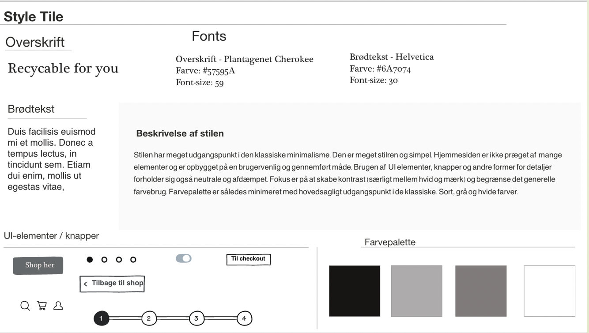
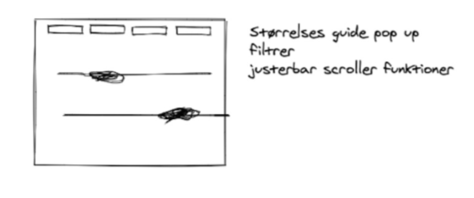

UX

UX forløbet var på mange måder anderledes end vores tidligere grundlæggende web forløb. I UX forløbet blev kodningen lagt midlertidligt på hylen og gjorde i stedet plads til en anden form for forarbejde, hovedsagligt analyse og skitserings arbejde. Projektet bestod i at desgine en webshop der sælger t-shirts. Opgaven endte ud i at lave en prototype i Adobe XD udfra konceptet og til sidst pitche ideen.
Opgavens hovedpunkter
- Forstå opgaven udfra givet Breif af case
- Udtænke koncpet (USP, afsender, målgruppe osv.)
- Foretage forskellige former for research
- Gå fra UX Research til ide (Sketch)
- Teste prototype
- Pitche konceptet
Proces
Mit koncept bestod af en bæredygtig E-shop, kaldet Crafted Cloth (CC), som specialiserer sig i at lave tilpasset tøj udfra kropsmål samt at kunne genbruge brugt indsendt tøj. Målgruppen var tiltænkt mænd i 18-30 års alderen. Konceptet skulle henvende sig som en overkommelig og holdbart. På dette tema lærte vi om den metodiske udvikling fra research til ide. Til denne proces arbejde vi meget med lightning demos og sketch. Denne form for idegenering blev også benyttet på sidste tema som en del af redesign opgaven. Jeg benyttede 4 typer af Research (desk, observation, interview samt survey research, til at skabe grundlag for den viden og de indsigter der basserede sig på mit koncpet. En kombination af disse kvalitative og kvantitavie researchformer ledte til videreudvikling af konceptet.
De primære indsigter jeg fik var:
- Pris og kvalitet er de vigtigste faktorer når der handles online
- Uoverskuelig side og for lille udvalg er primære grunde til fravælgelse af en side
- Bæredygighed er ikke det primære fokus når der handles på nettet
Efterfølgende kunne jeg begynde at skisere løsningen til koncpetet og webshoppen. Jeg tog udgangspukt i en minimalistisk opbygning og i at få etableret et pointssytem, så brugeren havde mulighed for at optjene points ved at indsende tøj. Tanken var at dette ville fremme incitamentet og den generelle brugeroplevelse.
I designprocessen blev point optjeningen inkluderet i en udvidet personlig side. Dette indebar at brugeren havde fuld kontrol over og tilgang til alle de nødvendige informationer. Det var også her at brugeren kunne organisere vedkommens personlige tilpasninger.
De indledende test gav primært feedback vedrørende prototypens viseuelle udtryk. Det blev tydeligt at købsprocessen var vanskelig at kommme igennem. Fx. at brugeren blev sendt tilbage til shoppesektionen fremfor at blive, når der blev trykket "fortsæt med at handle". Derudover angav testene at der var usikkerhed blandt knappernes funktioner. Hertil blev der implementeret mere information og produktbeskrivele.
De fleste ændringer krævede en justering af det visuelle indtryk samt mindre ændringer i layoutet. Dette var til at overkomme. Testene viste også at flere brugere var usikre på konceptes to hovedkoncepter (returnering og størrelstilpasning). Disse ændringer var mere vanskelig at justere. Dette antydede at jeg skulle have nøjes med at teste et af koncepterne i prototypen og således koncenterer mig om et af koncepterne.
Processens overordnet fremgangsmåde

Prototype 1

Koncept
 Pitch
Pitchens opbygning fulgte undervisningsmaterialet om pitch struktur, hvor pitchen blev delt op i tre overordnede dele. Der kunne også være blevet benyttet NABC-modellen. Min pitch indledte ved at fange opmærksomheden ved at introducere mængden af tons tøj der bliver smidt ud hvert år i forlængelse af hvor meget tøjforbruget er steget de sidste 10 år. På denne måde blev konceptet placeret som løsning til et voksende problem. jeg fik i præsenteret relevant research samt relevante indsigter. Feedback viste at pitchen kunne være opstillet mere struktureret ved punktformer og ved at opdele flere sektioner. Pitchen inddrog til sidst resultaterne fra testene og kunne konkludere at målgruppen skulle udvides i det bæredygtigehd ikke var relevant nok for det specifikke segment. Det blev også konkluderet, at udvalget skulle udvides hvis det skulle holde brugeres interesse.
bemærkninger
Prototype og pith have haft fokus på en af konceptets hovedfunktioner, enten den skræddersyet del eller den genbrugelige del. Der blev meget at forhodle sig til. Testene viste at disse enkelte koncept dele ikke fremstod tydelige nok. Ved at fravælge den ene del kunne test af prototype og pitch af koncept være blevet koncentreret mere og der kunne være blevet arbejdet mere i dybden med dette.
Udforsk prototype 2 her